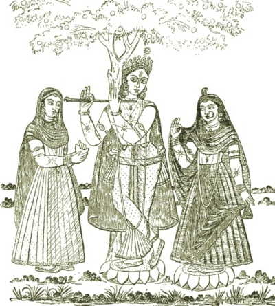

Sacred Texts
Hinduism
|

|
Hindu Mythology, Vedic and Puranic
by W.J. Wilkins
[1900]
|
Contents
Start Reading
Page Index
Text [Zipped]
This is a comprehensive study of Hindu mythology.
Due to the huge number of gods and goddesses, and their changing
role through centuries of Indian spiritual life, this is a complex subject.
This book covers Hindu mythology during the Vedic and Puranic periods.
Wilkins starts with the very earliest pantheon of the Vedas,
such as Surya, the storm-god Maruts, Agni, Soma, Yama,
and the dawn Goddess Ushas.
From there he moves into the later, and very intricate, Puranic mythology.
This includes detailed treatment of the central triad of Brahmâ, Vishnu and Shiva, along with dozens of other Gods and Goddesses, nature spirits,
half-divine heros of the epics, and so on.
Wilkins covers the dozen of so principal avatars of Vishu, including Krishna
and (suprisingly) Buddha, and prophecies of the mysterious Kalki avatar,
yet to come.
The dozens of line drawings are good reference art for
each of the major deities.
If you are attempting a read through of the Rig-Veda, the Mahabharata or
Ramayana, this the book will clear up much confusion.--J.B. Hare, May 17th, 2009.
Title Page
Preface
Preface to Second Edition
Contents
List of Illustrations
Part I. The Vedic Deities
Chapter I. The Vedas
Chapter II. The Vedic Gods Generally
Chapter III. Dyaus And Prithivi
Chapter IV. Aditi, and the Ādityas
Chapter V. Agni
Chapter VI. Sun or Light Deities
Chapter VII. The Storm Deities
Chapter VIII. Soma
Chapter IX. Tvastri or Visvakarma
Chapter X. Yama
Part II. The Purānic Deities
Chapter I. The Purānas
Chapter II. Brahma
Chapter III. Brahmā and Sarasvati
Chapter V. Vishnu and Lakshmi
Chapter V. The Incarnations or Avatāras of Vishnu
1. The Matsya or Fish Avatāra
2. The Kūrma or Tortoise Avatāra
3. The Varāha or Boar Avatāra
4. The Nrisingha or Man-Lion Avatāra
5. The Vāmana or Dwarf Avatāra
6. The Parasurāma Avatāra
7. The Rāma Chandra Avatāra
8. The Krishna Avatāra
8A. The Balarāma Avatāra
9. The Buddha Avatāra
10. The Kalki Avatāra
Jagannāth
Chaitanya
Kamadeva
Chapter VI. Siva
Chapter VII. Umā
Chapter VIII. Sons of Siva and Pārvati
Chapter IX. The Puranic Account of the Creation
Chapter X. The Purānic Divisions of Time
Part III. The Inferior Deities
Chapter I. The Divine Rishis
Chapter II. Kuvera
Chapter III. The Demigods of the Rāmāyana
Chapter IV. The Demigods of the Mahābhārata
Chapter V. The Planets
Chapter VI. The Asuras
Chapter VII. Sacred Animals and Birds
Chapter VIII. Gangā
Chapter IX. Sacred Trees
Chapter X. Miscellaneous Minor Deities
Chapter XI. Superhuman, Though Not Divine Beings
Index